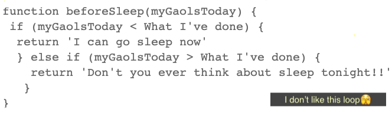
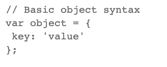
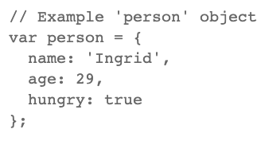
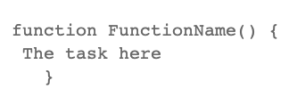
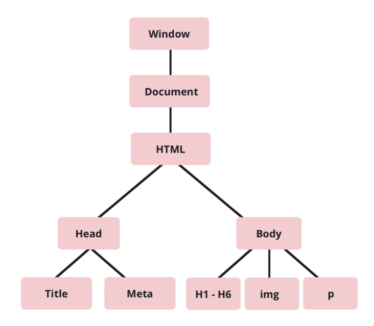

HTML(structure) - The skeletal system in our body, holds our whole body.
CSS(appearance) - It's how we appear, we can be fat or skinny, and wear clothes we like.
JavaScript(action) - The nervous system and muscles, make us have the ability to respond and make actions.
By default, a program executes from the first line and ends at the last line. We call this control flow. Unless it meets any statement that changes the control flow of the program.
Loop is one of iteration statements we can use to change our control flow. The loop statement will keep running until there is either nothing left to loop over or if the condition becomes false. And the rest of the program will continue execute.
* For example:
My everyday life control flow is:
WAKE UP → MEAL → CODE → MEAL → CODE → MRAL → STUDY → SLEEP
Loop is like MEAL time, I will eat until not hungry anymore. Then move on to CODE/STUDY.
We can also set the conditional statements in the loop, such as 'If, Else If, Else'.
* For example:

Both arrays and objects are the same use for storing the data, but there is a difference between objects and arrays.
Arrays,
We use arrays whenever we want to create and store a list of multiple items in a single variable. With "zero-based indexing",
the first item in an array has an index of 0.
* For example:
let dinnerOptions = ['pizza', 'pasta', 'dumplings', 'nothing'];
dinnerOptions[3]; → return I have 'nothing' for dinner
- - - - - - - - - - - - - - - - - - - - - - - - -
objects are used to represent a “thing” in our code. That could be a person, a pet, or a book, anything can be defined by
a set of characteristics(properties). The properties consist of a key and a value.
* For example:


Properties in objects can be accessed by using either dot or bracket notation.
// Dot notation
person.age → returns 29
// Bracket notation
person['age'] → returns 29
In JavaScript, we can divide up the code into reusable parts called functions. It's code designed to perform a particular task. We can call or invoke this function by using
its name followed by parentheses, like this: functionName()
Function names can contain letters, digits, underscores, and dollar signs. Each time
the function is called, the code inside the curly braces will be executed.
* For example:

// Call function
functionName()
The Document Object Model (DOM) is a cross-platform and language-independent interface that treats an HTML document as a tree structure wherein each node is an object representing a part of the document.
The DOM represents a document with a logical tree.
- Documents mean: Your HTML page document.
- Object means: Elements and attributes in your page.
- Model means: Tree structure of HTML Elements.

We can create, access and control, and remove HTML elements dynamically in JavaScript. The DOM methods presented here are not specific to HTML; they also apply to XML. The demonstrations provided here will work fine in any modern browser.
If you want to learn about DOM methods, there is more information Here .